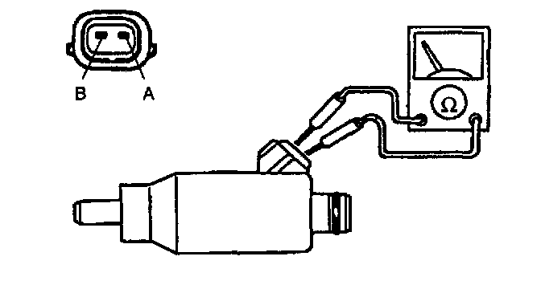

Fuel Injector Resistance Test
Resistance InspectionNOTE: Perform the following test only when directed.
1. Disconnect the fuel injector connectors.

2. Measure the resistance of the fuel injector by using an ohmmeter.
Resistance: 12-16 Ohm (20°C (68°F))
3. If not as specified, replace the fuel injector. If as specified but On-vehicle Inspection is failed, inspect following:
Open circuit
- Ground circuit (No.1 cylinder fuel injector connector terminal B and PCM connector terminal 3W)
- Ground circuit (No.2 cylinder fuel injector connector terminal B and PCM connector terminal 3X)
- Ground circuit (No.3 cylinder fuel injector connector terminal B and PCM connector terminal 3Y)
- Ground circuit (No.4 cylinder fuel injector connector terminal B and PCM connector terminal 3Z)
- Power circuit (No.1 cylinder fuel injector connector terminal A and main relay connector terminal D through common connector)
- Power circuit (No.2 cylinder fuel injector connector terminal A and main relay connector terminal D through common connector)
- Power circuit (No.3 cylinder fuel injector connector terminal A and main relay connector terminal D through common connector)

- Power circuit (No.4 cylinder fuel injector connector terminal A and main relay connector terminal D through common connector)
Short circuit
- No.1 cylinder fuel injector connector terminal B and PCM connector terminal 3W to ground.
- No.2 cylinder fuel injector connector terminal B and PCM connector terminal 3X to ground.
- No.3 cylinder fuel injector connector terminal B and PCM connector terminal 3Y to ground.
- No.4 cylinder fuel injector connector terminal B and PCM connector terminal 3Z to ground.